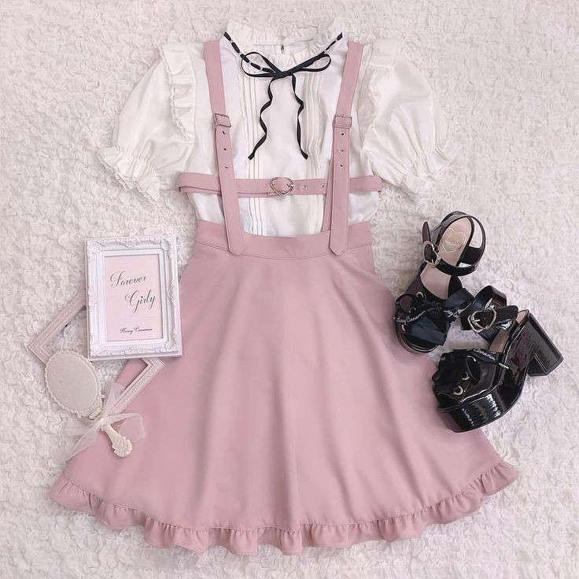

WHAT TO WEAR IN SPRING

A new season means new outfits, and we couldn’t be more excited about that. But what do you do when the weather’s cold in the morning, hot in the day… and cold again at night? The trick to putting a stylish spring outfit together is starting out with chic basics, and then updating your style for the season. Here are our top style tips on what to wear for spring:
The Best Basics To Wear For Spring
The key to having the perfect spring outfit is to start with good spring basics. If you have a solid wardrobe of essentials, you’ll be able to mix and match with ease. They’ll also provide a stylish spring outfit you can add accessories to. Here are a few pieces you should start with:
- The elevated t-shirt. For a piece that captures effortless cool, look for a t-shirt in a fabric such as neoprene or cashmere that will bring an extra touch of elegance to your outfit.
- The light jacket. For chilly mornings and nights, a lightweight jacket is the ideal addition to your spring outfit. A trench coat is also a classic, but right now bomber jackets and denim jackets are trending for spring too.
- The easy dress. A dress is an all-in-one spring outfit. Find one that has a relaxed but chic silhouette and all you have to do is throw it on the morning and go.
- The cropped pant. Once an office classic and now an off-duty staple too, cropped trousers look relaxed but tailored too. Ideally you’d like a pair that sits at least mid waist and is cropped just above the ankle. Our favourite spring tip: you can wear it with heels and flats.
- The perfect white trainer. Think weekend cool, rather than gym shoe. Favoured by the style crew for its off-duty cool, white trainers add a minimalist edge to spring outfits. Look for one in leather or sturdy canvas that has a slim silhouette and clean details.
How To Adapt Your Outfits From Winter To Spring
You’re probably so used to wearing heavy coats that you don’t know what to do with the warmer weather. Read how we update our winter staples for spring outfits:
- Wear silk scarves instead of chunky knitwear. Choose one that’s colourful and bright to tie around your neck, your wrist or your bag for a fun spring accessory.
- Try a cotton sweater instead of wool. Not only will it be more comfortable, if it gets warm you can always channel preppy style and tie it around your shoulders for a relaxed spring look.
- Wear a suede or denim coat instead of faux fur. Not only are these wardrobe classics the perfect cover up for spring weather, they also add an instant edge to any outfit.
- Swap a turtleneck for a button down shirt. Swap the winter favourite for a piece that’s just as crisp and polished, but that works better for the season. We like wearing a boyfriend style shirt with jeans or cropped pants and red lipstick.
This Season's Best Spring Outfit Ideas
- Sweater and midi skirt. It’s not quite the end of sweater weather, so don’t pack your knits away yet; but instead of wearing it with jeans, try a midi skirt instead. The polished silhouette will make your outfit look just that little bit more elegant; finish the outfit with heels and you’re good to go.
- Cropped jeans and mules. It’s the thinking lady’s perfect pairing. Cropped jeans show off the ankles, while classy mules make the outfit look more polished. It’s perfect for a night out.
- Denim on denim. This combination used to be strictly off limits, but like we said earlier, the rules have gone out the window. We like to wear a denim button down shirt with vintage denim flares, topped off with a leather jacket to break it up.
- An off the shoulder top and jeans. See a trend here? It’s all about dressing up our favourite off duty pieces with something more ladylike, and a feminine off the shoulder top is a great way to make jeans more sophisticated.
10 SPRING OUTFIT FORMULAS TO WEAR ALL SEASON LONG >>